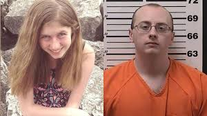

What is Crime?
Written by: Emerald Mendez, 2024
A crime is an unlawful act defined by a country's legal system as harmful to individuals, society, or the state. It can involve actions
like theft or assault or the failure to act when required by law such as neglect of duties. Crimes are categorized based on their severity,
such as misdemeanors which are less serious offenses like vandalism and felonies which are serious offenses like murder. When someone commits
a crime, they may face penalties such as fines, imprisonment, community service, or other legal consequences, determined through a judicial process.

Jayme Closs Kidnapping Case: Survivor's Brave Escape After 88 Days of Captivity
Solved
The Jayme Closs kidnapping case involved 13-year-old Jayme Closs, who was abducted in 2018 after
her parents were murdered in their home in Barron, Wisconsin. The kidnapper, Jake Patterson, held her captive for 88 days,
during which she endured abuse. Jayme eventually managed to escape and was found by a neighbor, leading to Patterson's arrest.
He was later convicted of two counts of first-degree intentional homicide and one count of kidnapping, receiving a life sentence
without parole. The case drew national attention, showcasing Jayme’s bravery and resilience in the face of unimaginable trauma.
Harvey Weinstein
Ongoing
The Harvey Weinstein case is a prominent example of sexual assault,
involving accusations from over 80 women of misconduct spanning decades. In 2020, Weinstein
was convicted of rape and sexual assault against two women and sentenced to 23 years in prison.
This landmark case became a catalyst for the #MeToo movement, bringing global attention to the pervasive
issue of sexual violence and accountability for powerful individuals.
OJ Simpson Murder Trial: The Controversial Acquittal That Shocked the Nation
Unsolved
One of the most well-known cases of murder is the O.J. Simpson murder trial in the United States. In 1994, O.J.
Simpson was accused of murdering his ex-wife, Nicole Brown Simpson, and her friend, Ron Goldman. Despite strong evidence, including DNA
and a bloody glove, he was acquitted in a highly publicized trial. However, in a later civil case, Simpson was found liable for their
wrongful deaths and ordered to pay damages. The case remains a significant example of how legal outcomes can differ in criminal and civil courts.
 Battle of Marawi: Terrorist Siege Ends After Five Months of Intense Fighting
Solved
Battle of Marawi: Terrorist Siege Ends After Five Months of Intense Fighting
Solved
The 2017 Marawi Siege was a major act of terrorism in the Philippines, where ISIS-linked militants, including
the Maute Group and Abu Sayyaf, seized the city of Marawi in Mindanao, aiming to establish an ISIS stronghold. The siege lasted for five months,
resulting in over 1,100 deaths, including militants, soldiers, and civilians. The Philippine military launched a large-scale operation to retake the
city, which was declared liberated in October 2017. The siege caused widespread destruction, displacing thousands of civilians, and highlighted the
ongoing threat of extremist groups in the region.